Code Review¶
基本流程¶
rmac.cu/rmac_elim_cpu¶
对约化后的macaulay矩阵（稠密）进行cpu多线程高斯消元。
- 多线程寻找主元行，并记录所有主元列为1的行号
主线程：将剩余所有行平均分配给所有线程。
线程函数：
C++
static void find_pvt_rows_cpu(void* dummy) {
fpvt_arg* arg = (fpvt_arg*) dummy;
uint64_t count = 0;
for(uint64_t i = arg->start; i < arg->end; ++i) {
uint64_t* const row = rmac_row(arg->sys, i);
if( drm_at(row, arg->col_idx) ) {
arg->local_indices[count++] = i;
}
}
if(count) {
// copy the local indices into global one
pthread_mutex_lock(arg->index_lock);
uint64_t offset = *(arg->index_offset);
*(arg->index_offset) += count;
pthread_mutex_unlock(arg->index_lock);
memcpy(arg->indices + offset, arg->local_indices, sizeof(uint32_t) * count);
}
}
- 多线程进行行约化
主线程：将indices中存储的需要被约化的行平均分配给每个线程。
线程函数：
C++
static void
reduce_rows_cpu(void* dummy) {
reduc_arg* arg = (reduc_arg*) dummy;
const uint64_t* const pvt = rmac_row(arg->sys, arg->indices[0]);
for(uint64_t i = arg->start; i < arg->end; ++i) {
uint64_t* const dst = rmac_row(arg->sys, arg->indices[i]);
rmac_xor_after(arg->sys, dst, pvt, arg->col_idx);
}
}
- 行交换（只换指针）
rmac.cu/rmac_elim_gpu¶
- 初始化
C++
// 偏好更多的共享内存
cudaFuncSetCacheConfig(reduc_rows, cudaFuncCachePreferShared);
// 修改Bank模式 （可选4Byte或8Byte）
cudaFuncSetSharedMemConfig(reduc_rows, cudaSharedMemBankSizeEightByte);
C++
static __global__ void
rmac_elim_init(uint64_t* const sys, uint64_t** rows, uint32_t* row_indices,
const uint32_t eq_num, uint32_t slot_num) {
const uint32_t tid = global_tid();
if(tid < eq_num) {
rows[tid] = sys + tid * slot_num;
row_indices[tid] = tid;
}
}
- 寻找主元行 每行对应一个线程
C++
static __global__ void find_pvt_rows(uint64_t** __restrict__ rows,
const uint32_t eq_num, const uint32_t start, const uint32_t col_idx,
uint32_t* const __restrict__ indices, uint32_t* const __restrict__ rcount) {
const uint32_t tid = global_tid();
if(start <= tid && tid < eq_num) {
uint64_t* row = rows[tid];
// check the target monomial in the row
if( drm_at(row, col_idx) ) {
indices[atomicAdd(rcount, 1)] = tid;
}
}
}
- 进行行约化
每列（64位）对应一个线程
此处的共享内存没有意义，应使用寄存器。
C++
static __global__ void reduc_rows(uint64_t** __restrict__ rows, const uint32_t slot_num,
const uint32_t start, uint32_t* const __restrict__ indices, const uint32_t rcount) {
extern __shared__ uint64_t smem[];
const uint32_t tid = global_tid();
if(start + tid < slot_num) {
uint64_t* src = rows[indices[0]];
// copy src into shared memory
smem[threadIdx.x] = src[start + tid];
// no need to sync
// for each rows below
for(uint32_t i = 1; i < rcount; ++i) {
uint64_t* dst = rows[indices[i]];
dst[start + tid] ^= smem[threadIdx.x];
}
}
}
- 行交换（只换指针）
mqsolver.cu/bf_subsys¶
在高斯消元后保留64个方程作为子系统（非线性）。

-
cpu枚举
-
选择线性方程（最多32个），非线性方程作为subsys的验证
-
改变存储方式（列），一列保存在一个u32中
-
gpu枚举
-
初始化：格雷码枚举顺序（线程内枚举）的剩余变量系数的偏导数（变量的差），为了快速的获得高斯消元数据。
- 按列的位高斯消元（以3个变量为例）：
\[
\begin{bmatrix}
mask & x_1 & x_2 & x_3 & b \\
1 & 0 & 1 & 1 & 0 \\
1 & 1 & 0 & 0 & 1 \\
1 & 0 & 1 & 0 & 0 \\
1 & 1 & 0 & 0 & 1 \\
1 & 0 & 0 & 1 & 1
\end{bmatrix}
\to
\begin{bmatrix}
mask & x_1 & x_2 & x_3 & b \\
1 & 0 & 1 & 1 & 0 \\
0 & 1 & 0 & 0 & 1 \\
1 & 0 & 1 & 0 & 0 \\
1 & 0 & 0 & 0 & 0 \\
1 & 0 & 0 & 1 & 1
\end{bmatrix}
\to
\begin{bmatrix}
mask & x_1 & x_2 & x_3 & b \\
0 & 0 & 1 & 1 & 0 \\
0 & 1 & 0 & 0 & 1 \\
1 & 0 & 0 & 1 & 0 \\
1 & 0 & 0 & 0 & 0 \\
1 & 0 & 0 & 1 & 1
\end{bmatrix}
\to
\begin{bmatrix}
mask & x_1 & x_2 & x_3 & b \\
0 & 0 & 1 & 1 & 0 \\
0 & 1 & 0 & 0 & 1 \\
0 & 0 & 0 & 1 & 0 \\
1 & 0 & 0 & 0 & 0 \\
1 & 0 & 0 & 0 & 1
\end{bmatrix}
\]
使用python生成的代码，通过include嵌入。
C++
uint32_t rmask = ~0x0U;
{
uint32_t tmp = lsys0 & rmask;
uint32_t sf = (!tmp) ? 0x0U : ~0x0U;
uint32_t piv = ctz(tmp);
rmask ^= (0x1U << piv) & sf;
uint32_t mask = (lsys0 ^ (0x1U << piv) ) & sf;
lsys0 ^= mask;
lsys1 ^= mask & (((lsys1 >> piv) & 0x1U) ? ~0x0U : 0x0U);
lsys2 ^= mask & (((lsys2 >> piv) & 0x1U) ? ~0x0U : 0x0U);
lsys3 ^= mask & (((lsys3 >> piv) & 0x1U) ? ~0x0U : 0x0U);
}
{
uint32_t tmp = lsys1 & rmask;
uint32_t sf = (!tmp) ? 0x0U : ~0x0U;
uint32_t piv = ctz(tmp);
rmask ^= (0x1U << piv) & sf;
uint32_t mask = (lsys1 ^ (0x1U << piv) ) & sf;
lsys1 ^= mask;
lsys2 ^= mask & (((lsys2 >> piv) & 0x1U) ? ~0x0U : 0x0U);
lsys3 ^= mask & (((lsys3 >> piv) & 0x1U) ? ~0x0U : 0x0U);
}
{
uint32_t tmp = lsys2 & rmask;
uint32_t sf = (!tmp) ? 0x0U : ~0x0U;
uint32_t piv = ctz(tmp);
rmask ^= (0x1U << piv) & sf;
uint32_t mask = (lsys2 ^ (0x1U << piv) ) & sf;
lsys2 ^= mask;
lsys3 ^= mask & (((lsys3 >> piv) & 0x1U) ? ~0x0U : 0x0U);
}
solvable = !(lsys3 & rmask);